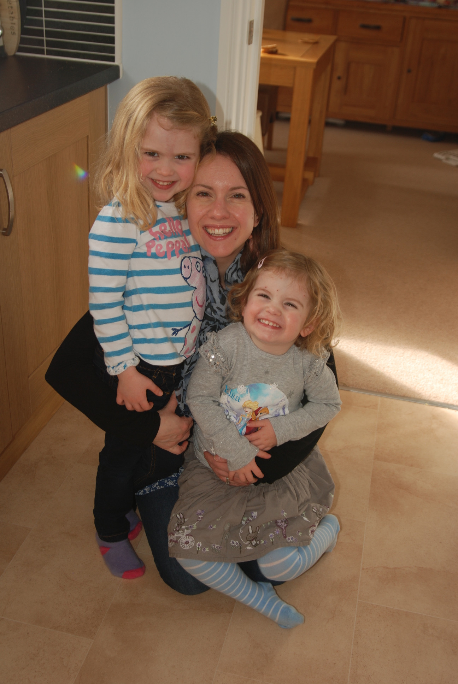

Yvonne

As a mum and primary teacher I love making learning fun.
I have designed all our Arty Monkeys classes to appeal to young children's
interests whilst allowing them to learn other important life skills for their age.
For me arts and crafts play a huge part of my family life - both my
children love painting, drawing and making things together. A cereal box is never "rubbish" in
our
house. It's been a television, a spaceship and even part of a bike!
Children have the most amazing imaginations because they see the world through new
eyes. I set up Arty Monkeys to allow these imaginations to flourish and be celebrated. Having
taken
my own children to various classes over the years I am keen that our classes will be fun for the
adults too!
Kelley

Ever since I was young I have had an interest and appreciation of things
which
were made instead of reproduced or bought off the shelf.
Over the years, especially since having kids, I have
learned that as well as it
being rewarding to create something from scratch, it's actually really really fun! It's also
a great way of communicating with my kids. There is nothing better than to see the pure
excitement in their eyes while they engineer their ideas. The twinkle when you tell them
just how good it looks - priceless!
With a background running a successful business and a bachelors degree in
English Language and Linguistics, I knew I had to do something with this burning desire to
bring the same joy and inspiration into other families through arts and crafts.